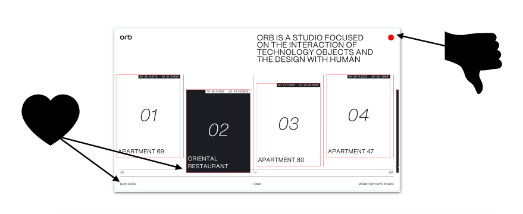

this is a paragraph
Review 1 Review 2 Review 3
DESIGN - Plenty of depth with image choreography and image movement in and out of frame.
USABILITY -Navigation is a bit spastic with a trackpad and the menu is not obvious.
CONTENT - Photographs are inconsistent. WHY IS THIS SITE YELLING AT ME?
CREATIVITY - I appreciate the “dark mode” feature although I am trying to understand its relevance to the site's, it would be interesting if when turned on it produced night time photographs of the architectural projects. The scroll through function compliments the contents nicely, giving the viewer a real chronological feel.